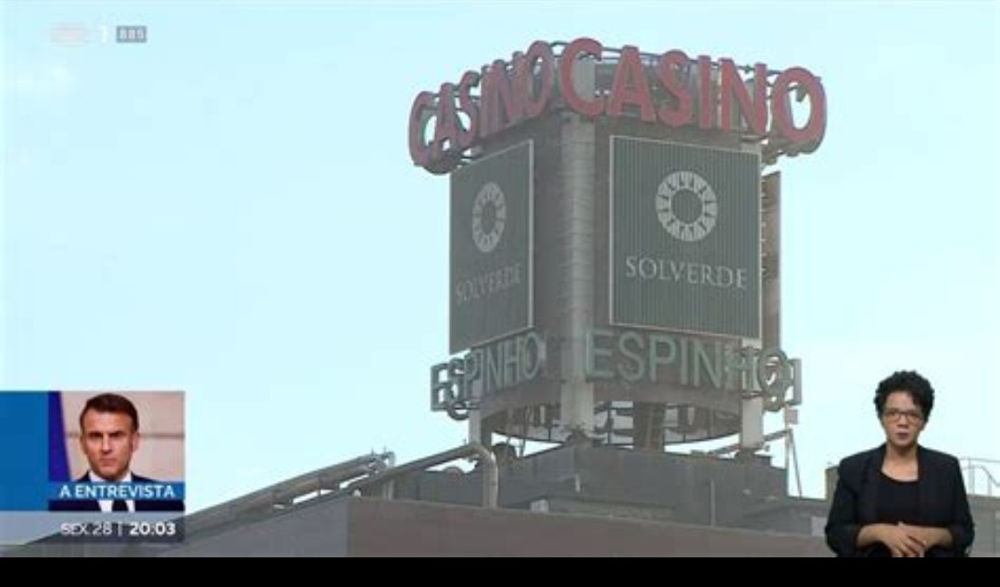

Publicado em 2025-05-06 20:28:26
“Portugal, terra de poetas e marinheiros, vive hoje um novo tipo de naufrágio — o da dignidade do Estado. E a Justiça, que devia ser farol, tornou-se âncora. Não ilumina: prende-nos ao fundo.”
José Sócrates, ex-primeiro-ministro de Portugal, continua por julgar — quase uma década depois de ser detido num aeroporto como personagem caída de um romance noir. Acusado de corrupção passiva, branqueamento de capitais e tráfico de influências, permanece, todavia, numa espécie de limbo judicial onde o tempo escorre como areia por entre os dedos de um povo cansado.
Luís Montenegro, por sua vez, simboliza outro vértice da tragédia. Fundou a empresa de consultoria Spinumviva enquanto coordenava a bancada parlamentar do PSD. Essa mesma empresa, transferida depois para a esposa e filhos, manteve contratos com clientes como a Solverde — operadora de casinos cuja concessão depende do Estado.
Este conflito de interesses tornou-se ainda mais grave quando Montenegro ascendeu a primeiro-ministro, passando a liderar um governo com poder directo sobre esses mesmos dossiês. A situação tornou-se insustentável quando se soube que a empresa familiar recebia uma avença mensal de 4.500 euros da Solverde. Uma relação, no mínimo, imoral.
Mesmo perante este escândalo, o PSD não o afastou. A cleptocracia portuguesa mostrou mais uma vez que está viva — e que o sistema continua a proteger os seus. A Justiça não agiu. A ética foi ignorada. E o povo assiste, cansado, a mais um capítulo da novela da impunidade.
A confiança nas instituições afunda-se como âncora em mar profundo. A esperança? Essa, vai-se dissipando — a não ser que um novo ciclo de cidadania desperta e exigente emerja das cinzas do conformismo.
in Fragmentos de Caos
Imagem : Fonte RTP